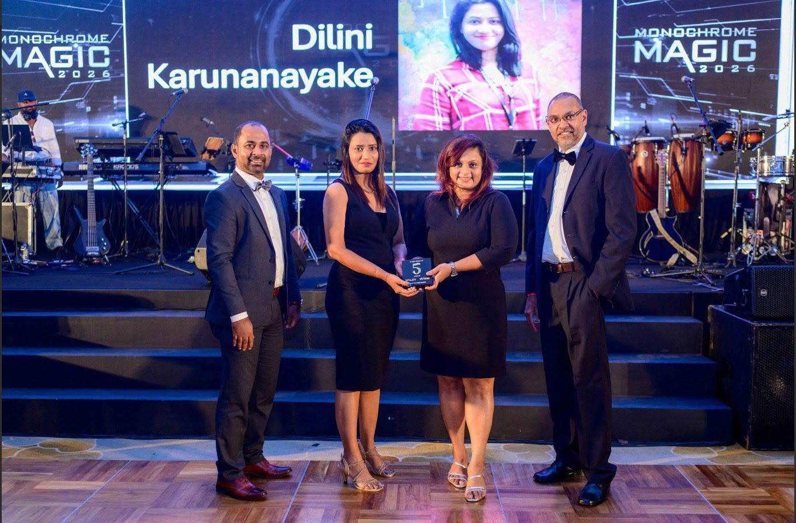
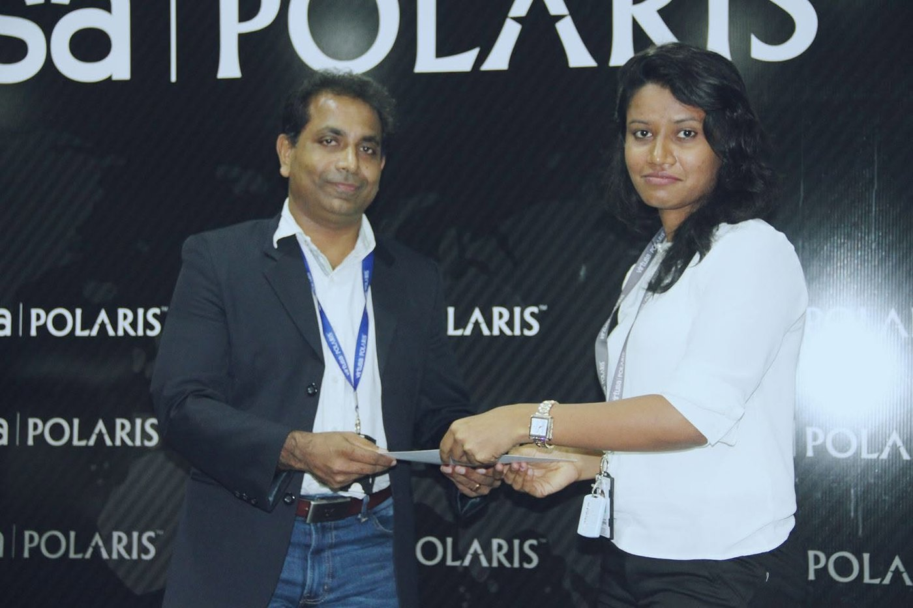
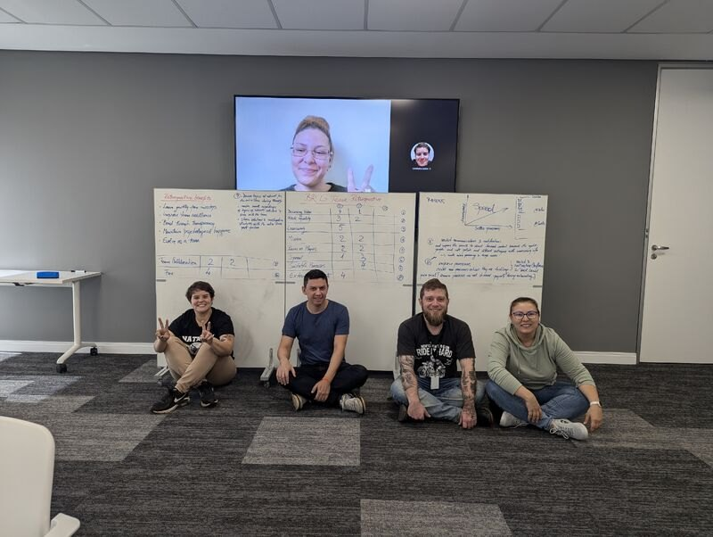
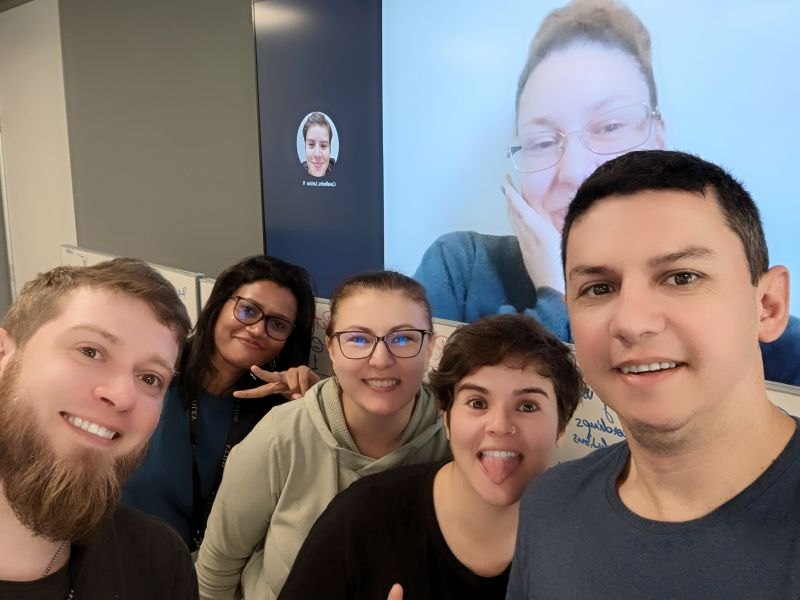
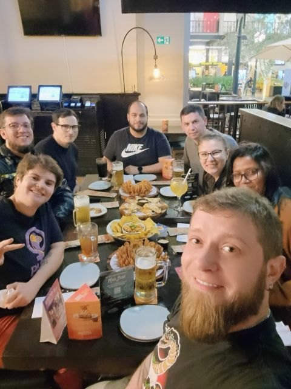

Service operations
Incident, request, problem, change and release management.
Reliable services. Stronger team spirit.
IT service delivery and application support leader with 10+ years of experience, including leadership of a 26-person team across Brazil, Jordan and Sri Lanka.
I bring people, process and technology together to keep business applications reliable and support teams moving forward.
With 10+ years in application support and IT service management, I have led international teams and worked across service delivery, incident coordination, technical escalation and service improvement. I focus on clear ownership, practical processes and dependable support.
Incident, request, problem, change and release management.
People management, coaching, recruitment and knowledge sharing.
SLA and KPI monitoring, backlog visibility and root-cause follow-up.
Application support, production readiness and escalation coordination.
Progressive experience across engineering, application support and service leadership.
Recognition for service, performance and contribution across client and technology teams.

Wiley Global Technology · 2026
2023 and 2024
2017

British Telecom Javelin ASM · 2016
Workshop and team visit in Brazil · 2024



Sri Lanka Institute of Information Technology (SLIIT) · 2015
IT Service Management
SLASSCOM Academy · 2024
Routing, Switching and Network Fundamentals
National Institute of Business Management
For service delivery, application support and IT operations opportunities in the UK. The email button opens your email app with a message addressed to Dilini.